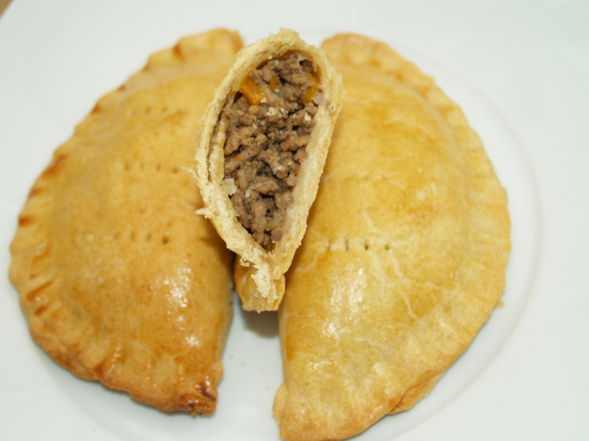

How to prepare Fried Rice

Ingredient
Produce
- 1 cup Carrots
- 1 cup Potatoes
- 1/2 tsp Thyme
Baking & spices
- 1 tsp Baking powder
- 1 tsp Curry powder
- 66 tbsp Flour
- 1/2 tsp Nutmeg
- 1 1/4 tsp Salt
- 1 pinch Salt
- 1/2 tbsp Sugar
Condiments
- 10 tbsp Margarine
Canned goods
- 2 Bouillon cubes
Pasta & grains
- 2 cups Rice, cooked
Oils & vinegars
- 1 1/2 tbsp Vegetable oil